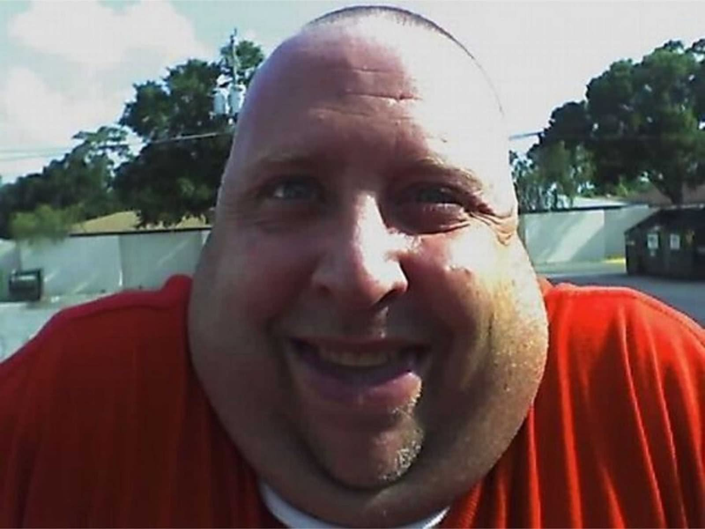

|  |
1) A Chippy is the most supple type of being. He is to be pious, and care for his
fellow kin with the utmost warmth.
2) In order to qualify for the Rash Gash Bloody Chippy Info Zine Club, you have to
possess a semi-mythical strain of DNA called the "Gastric 457" gene. It is found
in only 1 in 7080 adult men past the age of 35, but it is rapidly declining in
ubiquity. This gene not only makes it possible for Chippies to lactate, but it
also bears responsibility for the euphoria which fills the minds of Chippies across
the nation.
3) In the summer of 1958, Senator Ranald Aclaffe of Kenstripton, Marchusset
established the first Chippy Roundtable at his local shriners auditorium. In
addition to coining the infamous proverb of Gonjamonj, he shed light on
Chippies as less of an underground phenomena and more of a cult-like sense of
existence. In other words, he allowed insecure men to finally be themselves,
and embrace the Chippy stronghold.
4) The term Chippy is derived from Sudanese "Shi Peh," meaning to make larger
by means of engorgement. The word faded into obscurity until the early 1910s,
when the now lost silent film "Darnell Jacob Enters A Patstrip" was released
under Universal. The film contained a character named "Chippe Tensteak," who
was portrayed as flabby yet blissfully ignant. Tensteak went on to become a
household name in the world of cinema, despite the film's lack of availability.
5) There are three classes of Chippy existence, as defined by Prof. Bart
Weegee from New York Tech. The first one is "Diet Coke Fip," which is titled
after the low-tier Chippy's affinity for diet coke. A class two Chippytype
is also known as a "Peniskin." These Chippies are highly contagious, as
they all have butt cancer. That's yucky. The third Chippytype is
BespyWhespychan, and it is named after the whispy nature of the Chippy's
tits and testicles.